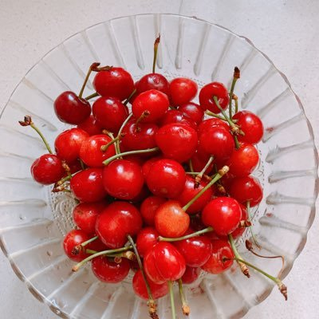

isac
@isac8964
RT @Bigcher41436077: 蝻界大乱在即，我和母亲深入探讨了女人建国的各种可能性，什么时机女人来摘桃，哪几个地方建国最好，建国后对外如何处理与蝻权国家的关系，对内如何避免“鉴激”式的政治运动，怎样才能让女国稳健地发展起来，带动更多蝻权国家的女人推翻蝻权统治…两个激…

Bigcherry
@Bigcher41436077
蝻界大乱在即，我和母亲深入探讨了女人建国的各种可能性，什么时机女人来摘桃，哪几个地方建国最好，建国后对外如何处理与蝻权国家的关系，对内如何避免“鉴激”式的政治运动，怎样才能让女国稳健地发展起来，带动更多蝻权国家的女人推翻蝻权统治…两个激女畅谈天下，好爽